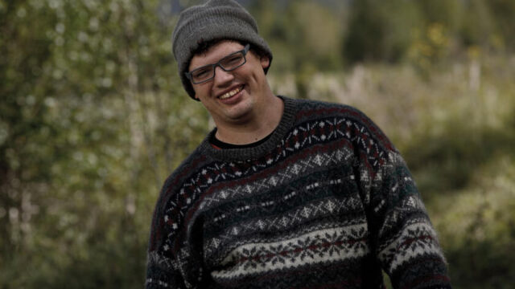
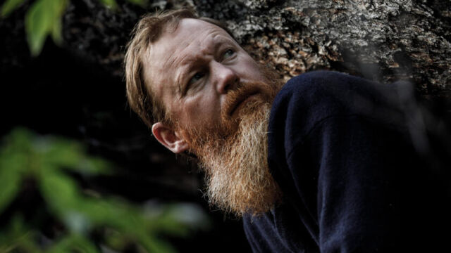
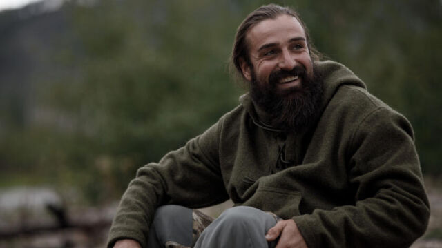
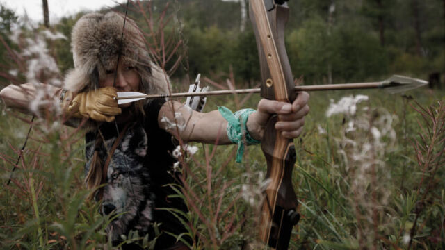

1stWinner
Sam Larson
Wilderness Skills Instructor
- Lasted
- 60 days
- Age
- 24
- From
- Lincoln, Nebraska
Loadout
- Saw
- Axe
- Pot
- Ferro rod
- Multitool
- Food ration
- Food ration
- Sleeping bag
- Paracord
- Trapping wire
Alone
Redemption · Selenge Province, Mongolia · Premiered 14 Jun 2018

Days each survivalist lasted, in finishing order, and why they tapped out. Every season page uses the same 0–100 day scale so seasons can be compared at a glance.







Who they are, where they're from and the ten items they carried in.
Wilderness Skills Instructor
Loadout
2ndplaceAccountant
Loadout
Electrician
Loadout
4thplaceBushcraft Instructor
Loadout
Wilderness Skills Instructor
Loadout
Outdoor Educator
Loadout
7thplaceRetired Green Bere
Loadout
8thplaceWilderness Living Skills Instructor
Loadout
9thplaceBlacksmith
Loadout
10thplaceCarpenter
Loadout
How many survivalists chose each item (items grouped into simplified categories).
Air dates, survivalists remaining at the start of each episode, viewers and IMDb rating.
| Ep | Title & opening quote | Aired | Remaining | Viewers (M) | IMDb |
|---|---|---|---|---|---|
| 1 | Redemption“Never confuse a single defeat with a final defeat.” — F. Scott Fitzgerald | 14 Jun 2018 | — | 1.41 | |
| 2 | The Haunting“All men make mistakes, but only wise men learn from their mistakes.” — Winston Churchill | 21 Jun 2018 | — | 1.30 | |
| 3 | The Serpent“It is not the mountains we conquer, but ourselves.” — Sir Edmund Hillary | 28 Jun 2018 | — | 1.40 | |
| 4 | Mongolia's Wrath“Nature, in her untamed state, is savage and unrelenting.” — Fennel Hudson | 5 Jul 2018 | — | 1.19 | |
| 5 | The Bowels Of Hell“Over every mountain there is a path, though it may not be seen from the valley.” — Theodore Roethke | 12 Jul 2018 | — | 1.25 | |
| 6 | Of Mice And Men“...we do not own these woods. They own us.” — Timothy Goodwin | 19 Jul 2018 | — | 1.66 | |
| 7 | Desperate Measures“Redemption can be found in hell itself if that's where you happen to be.” — Lin Jensen | 26 Jul 2018 | — | 1.66 | |
| 8 | Slayer II“Solitude, isolation are painful things, and beyond human endurance.” — Jules Verne | 2 Aug 2018 | — | 1.35 | |
| 9 | Starvation's Shadow“The mountains are calling and I must go.” — John Muir | 9 Aug 2018 | — | 1.43 | |
| 10 | Cold War“By endurance we conquer.” — Ernest Shackleton | 16 Aug 2018 | — | 1.56 |